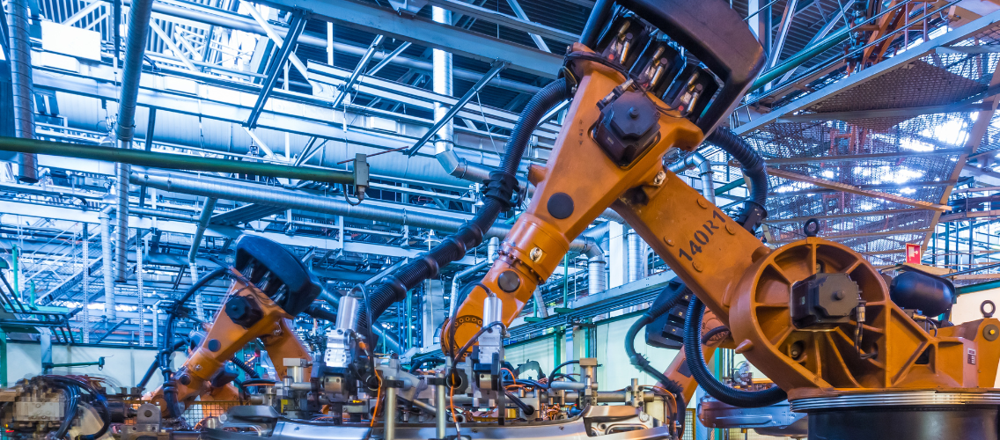

Introducción a la Ingeniería de Sistemas
Un recorrido por los fundamentos de la ingeniería de sistemas.
Áreas de Aplicación en el Mundo Real
La Ingeniería de Sistemas tiene una gran variedad de aplicaciones en el mundo real. Su enfoque interdisciplinario permite diseñar, analizar y optimizar sistemas en distintos sectores, desde la tecnología y la salud hasta la industria y el comercio, por lo tanto se podria decir que lo que hace un ingeniero de sistemas es abarcar una variedad de aplicaciones, desde software y hardware hasta sistemas de información en organizaciones, con el objetivo de resolver los problemas que se presenten en las diversas areas que esta ingenieria es aplicable. En esta lectura, exploraremos algunos de los sectores clave donde esta disciplina juega un papel fundamental.
Sectores Clave y Aplicaciones
✅ Sector Tecnológico
Las grandes empresas de software y tecnología utilizan la Ingeniería de Sistemas para desarrollar arquitecturas de software robustas y seguras. Empresas como Google, Microsoft y Amazon dependen de ingenieros de sistemas para mejorar sus plataformas digitales y garantizar la eficiencia de sus servicios en la nube.
✅ Salud y Medicina
La Ingeniería de Sistemas es fundamental en el desarrollo de sistemas hospitalarios, historias clínicas electrónicas y análisis de datos médicos. Gracias a esta disciplina, los hospitales pueden optimizar sus procesos y mejorar la calidad del servicio a los pacientes.
✅ Industria y Manufactura
Los sistemas de automatización industrial y robótica dependen de la Ingeniería de Sistemas para mejorar la producción y reducir costos. La implementación de sistemas inteligentes ha permitido que las fábricas operen con mayor precisión y rapidez.
✅ Finanzas y Banca
Los sistemas bancarios utilizan modelos de seguridad, análisis de datos y automatización de procesos para mejorar la gestión de transacciones y detectar fraudes. Gracias a los ingenieros de sistemas, las plataformas bancarias pueden operar con mayor eficiencia y seguridad.
✅ Transporte y Logística
El diseño de redes de transporte inteligentes y la optimización de rutas dependen en gran medida de la Ingeniería de Sistemas. Empresas de logística como FedEx y UPS emplean tecnologías avanzadas para mejorar la entrega de paquetes y reducir costos operativos.
Fuerte demanda en el campo laboral
Después de haber explorado las diversas áreas de aplicación de la Ingeniería de Sistemas, es evidente por qué esta disciplina se ha convertido en una de las más demandadas en la actualidad. Su versatilidad y alcance abarcan desde el desarrollo de software y la gestión de infraestructuras tecnológicas hasta la seguridad informática y la inteligencia artificial. En un mundo cada vez más digitalizado, donde la tecnología y la innovación científica avanzan a un ritmo acelerado, la necesidad de profesionales capacitados en esta ingeniería no hace más que crecer. La transformación digital en sectores como la industria, la educación, la salud y las finanzas ha consolidado a la Ingeniería de Sistemas como un pilar fundamental en la evolución de la sociedad moderna.
Conclusión
Como conluciones para esta lectura podemos sacar que la Ingeniería de Sistemas desempeña un papel fundamental en la transformación digital y la optimización de procesos en múltiples sectores. Su capacidad para diseñar, gestionar y mejorar sistemas complejos la convierte en un pilar esencial para la innovación tecnológica y la eficiencia operativa en diversas industrias. A medida que la tecnología continúa evolucionando, la Ingeniería de Sistemas seguirá expandiendo su alcance, impulsando soluciones innovadoras para los desafíos del mundo moderno y contribuyendo al desarrollo sostenible de la sociedad.
Referencias
- Universidad San Ignacio de Loyola. (s.f.). ¿Qué es la Ingeniería de Sistemas? USIL Blogs. Ver fuente
Recursos Adicionales
Conceptos Clave
- Sistema: Conjunto de elementos que trabajan juntos para un propósito común.
- Algoritmo: Secuencia de pasos lógicos para resolver un problema.
- Software: Conjunto de instrucciones que una computadora puede ejecutar.
- Hardware: Componentes físicos de un sistema informático.